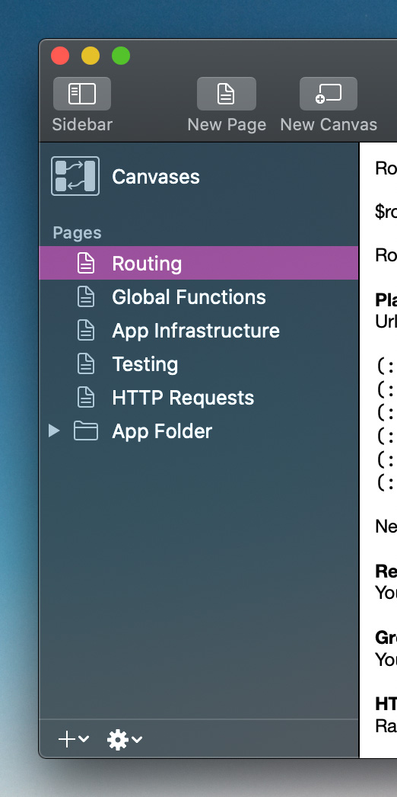
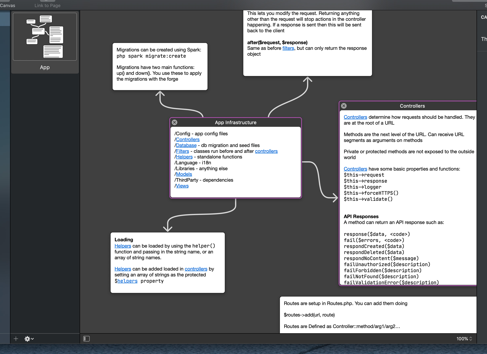
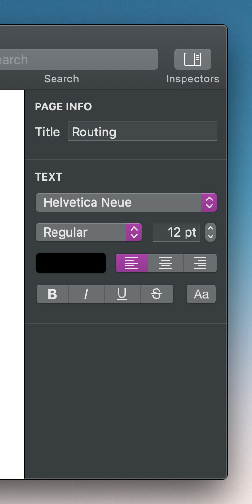
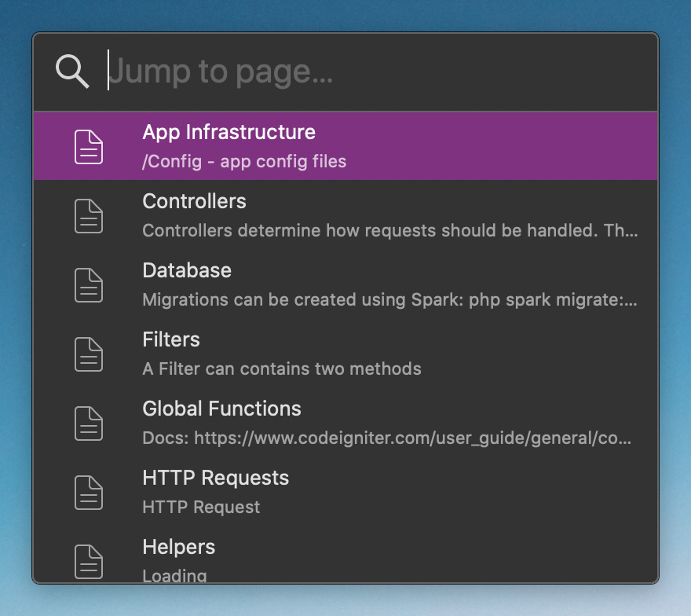
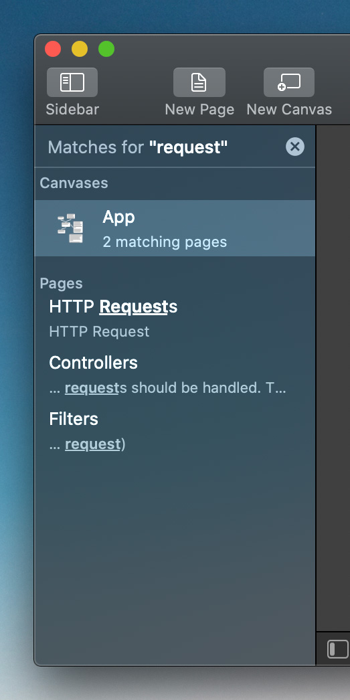

Last week we launched the Coppice website, where you can learn what Coppice is and the concepts behind it. This week we want to delve deeper into the actual app and show you what these concepts look like in practice. So let's take a tour through Coppice's interface.
Note: the screenshots here are from an alpha build running on macOS Catalina, so may look a bit different to those on the home page
Sidebar
The primary way to navigate through a document in Coppice is via the sidebar. This contains a list of all the Pages in your document, as well as providing you access to your Canvases. Pages can be ordered however you like and, with Coppice Pro, can be grouped into folders for easy organisation.

Editors
Editors take up the bulk of the window. If you select a Page in the sidebar you will be presented with that Page's editor. Each type of Page has its own editor. The first version of Coppice features two type of Pages: Text and Images. Text Pages give you a rich text editor, whereas Image Pages provide a more modest editor allowing you to set the image.
Selecting Canvases in sidebar opens up the Canvases editor, which requires a more in-depth look.
Canvases
On the left is a list of Canvases in your project, and on the right is the editor for the selected Canvas. The core experience of Coppice is adding Pages to a Canvas and visually arranging them to help you make sense of the thoughts they represent.

Adding a Page to a Canvas is as simple as dragging it from the sidebar. You can also add Pages to a Canvas using the Menu Bar or by right clicking on Pages in the sidebar.
By default, Pages have a minimalist appearance, only showing their content. Hovering over a Page will show more details, such as the Page's title, as well as letting you close the Page. You can move and re-size pages much like windows on your Mac, so you can position and size them however you like. You can also select a Page by clicking it. You can select multiple Pages by dragging a selection on the Canvas or by shift clicking, much like selecting files on your Desktop.
Each Page on your Canvas features its full editor, letting you modify the Page directly on the Canvas. To start editing a Page you simply click it once to select it, then you have access to the full array of editing functionality for that Page.
Inspectors
On the right of a document's window in Coppice are the Inspectors. Inspectors allow you to modify attributes of an object, such as a Page's title, a Canvas's theme, or the current font when editing text. Which Inspectors are visible will change depending on what you have selected in the editor.

Page Selector
The Page Selector is a special window that can appear in certain circumstances. It allows you to search through the Pages in your document and then selected one using only the keyboard, in a very similar way to Spotlight.

What happens when you select a Page depends on what the selector is being used for:
If you choose Jump to Page… from the Menu Bar, selecting a Page will navigate to that Page, just like clicking it in the Sidebar
If you choose Add to Canvas… from the Menu Bar, selecting a Page will add it to the current Canvas
And if you are creating a link, selecting a Page will create a link to that Page
Search
Finally, we have search. As your document grows, you may need some help in finding information in your document. The search field in the toolbar allows you to search for some text in every Canvas and Page in your document. As you type in some search text, the sidebar will change to show the results of that search. You can even drag Pages from your search results onto a Canvas.

Hopefully this has given you a more detailed overview of Coppice's UI, and some of the features and functionality that will soon let you cultivate your thoughts.
Be sure to subscribe to this blog and follow @mcubedsw on Twitter to be notified of future updates. Next week we will be looking at what motivated us to create Coppice in the first place.